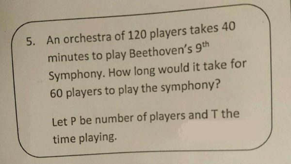
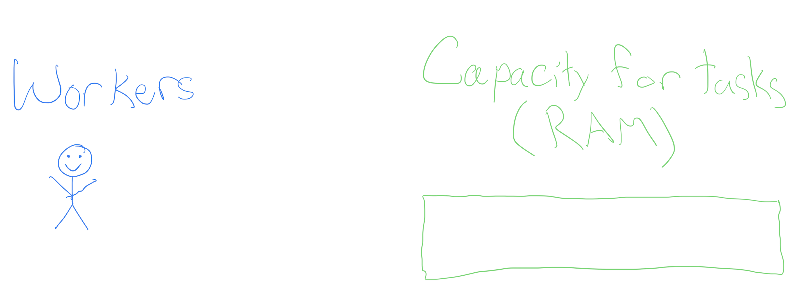
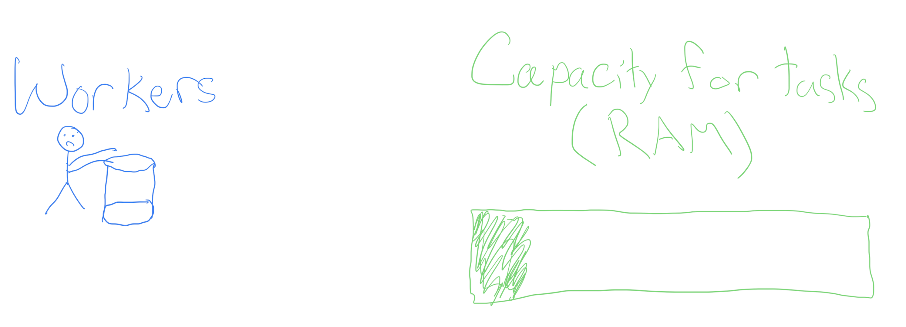
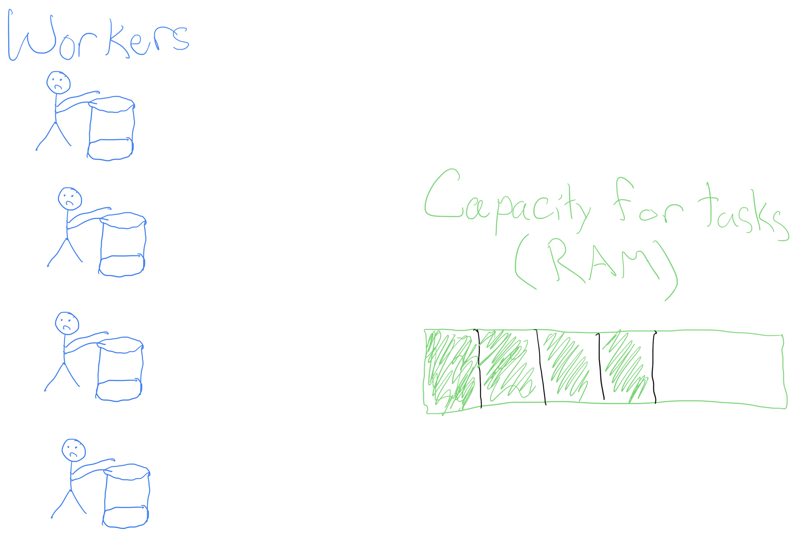
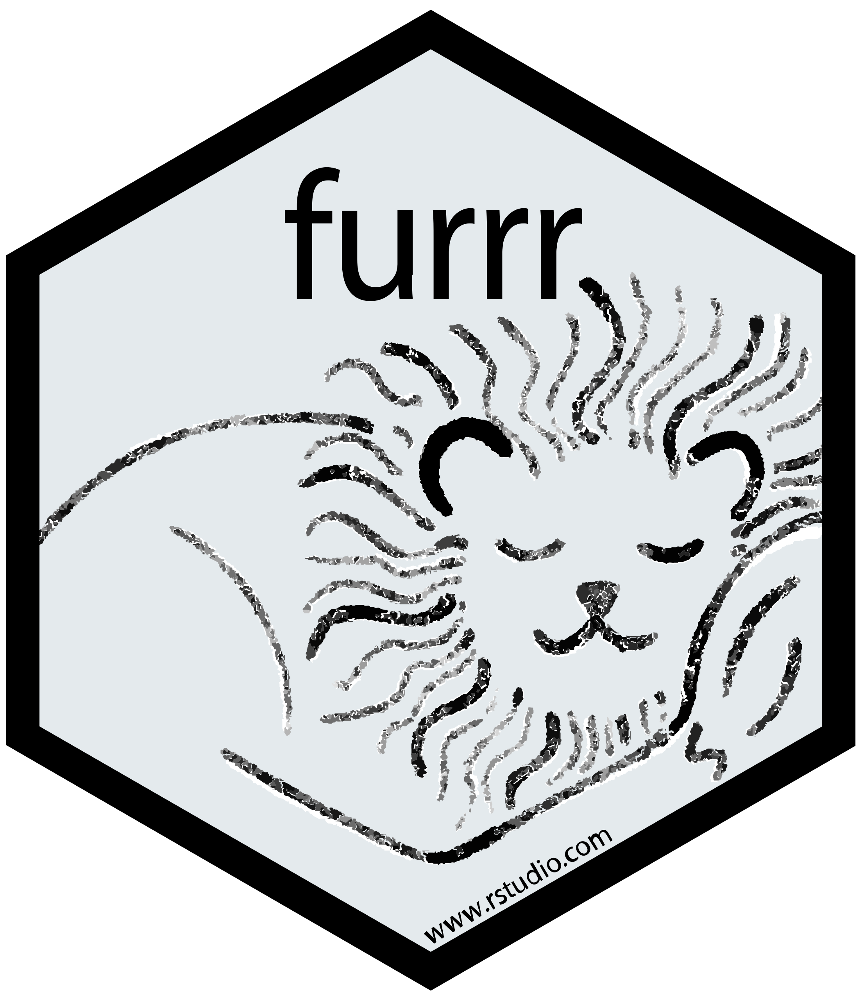
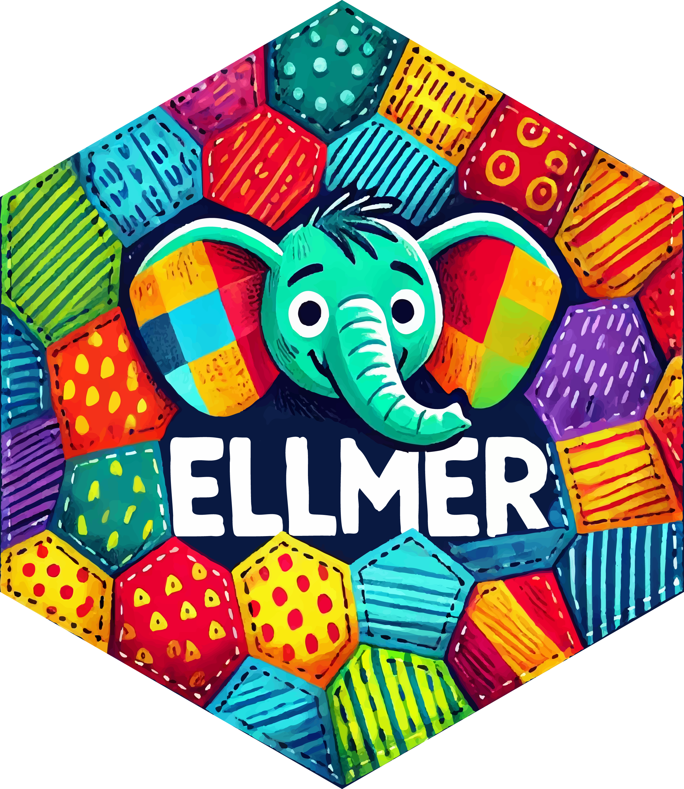

Parallelism, Ethics, and AI
Grayson White
Stat 241
Week 10 | Fall 2026
Week 10 Goals
Monday Lecture:
- Iteration
for()andwhile()loops- Functional programming
Wednesday Lecture:
- Parallelism
- Ethics
- AI
Parallelism
Parallelism
Last time, we learned how to iterate our code through
for()loops and functional programming withmap_XXX().But sometimes, we’d like to iterate tasks that take a long time.
(Lots of iterations) + (Code that takes a long time to execute) = 🕐, 🕑, 🕒, 🕓, 🕔…
Parallelism
- What if we could ask our computer to do some of those iterations at the same time as other iterations?
- Example: Instead of running 100 tasks that each take 1 minute sequentially (total: 100 minutes), do those same 100 tasks, but always be doing 4 at a time (total: 25 minutes)
Parallelism: Workers
- In order to think about parallel computing, we need to consider two components of your computer:

A task!
- Typically, we ask one worker to go do a task, e.g.,
- Execute a particular R command, or
A task!
- Typically, we ask one worker to go do a task, e.g.,
- Execute a particular R command, or
- churn 4 buckets of butter

Churning butter, together
- Churning butter is monotonous, but doesn’t take one’s full effort (see the RAM)
Churning butter, together
- What if, instead of waiting for the worker to finish the first bucket to go onto the next, we hired more workers?
Churning butter, together
- What if, instead of waiting for the worker to finish the first bucket to go onto the next, we hired more workers?

Churning butter, together
We get more butter faster!
Not a free lunch: have to pay the workers in RAM.
Parallelized for() loops with foreach and doParallel
The foreach library provides functionality similar to for() loops, but with slightly different syntax
- On it’s own, it doesn’t include parallel operations
.combinetellsforeach()how to combine the elements intovec.- By default, we would get a
list()back.
- By default, we would get a
- Can set
.exportto load packages necessary for computation
Parallelized for() loops with foreach and doParallel
Combining functionality of foreach with doParallel let’s us write loops in parallel!
Sequential:
In parallel:
[1] 12 user system elapsed
0.006 0.029 3.025 [1] 10 20 30 40 50 60 70 80 90 100 110 120- The
system.time()calls are just for illustrative purposes, and are uncessary for calling these loops.
Parallelized for() loops with foreach and doParallel
Last time, we created a bootstrap distribution for the mean DBH for our sample of Portland trees:
Now, we can do this in parallel:
- Why only ~3 times faster in parallel if we are using 10 workers??
Parallelized map_XXX()ing with furrr

Parallelized map_XXX()ing with furrr
- The
furrrpackages enables functional programming in parallel, with syntax and functionality mimicspurrr.
Last time:
Now, in parallel:
user system elapsed
0.499 0.087 7.733 seedoption allows us to do thread-safe random number generation.
Parallel computing: best practices and tips
Startup cost: it is (time) costly to start up many R processes to do something that is a relatively fast computation.
Big data: Try to limit your parallel computing to only include the necessary objects. Moving large objects across R sessions is (time) costly.
You must consider thread-safe random number generation.
Parallel computing is a balance of RAM, workers/cores, and costly operations like moving big data around and worker startup cost.
An art and a science! Practice tends to make you better at balancing these things.
Data Ethics: Algorithmic Bias
The Americian Statistical Association’s “Ethical Guidelines for Statistical Practice”
Integrity of Data and Methods
“The ethical statistical practitioner seeks to understand and mitigate known or suspected limitations, defects, or biases in the data or methods and communicates potential impacts on the interpretation, conclusions, recommendations, decisions, or other results of statistical practices.”
“For models and algorithms designed to inform or implement decisions repeatedly, develops and/or implements plans to validate assumptions and assess performance over time, as needed. Considers criteria and mitigation plans for model or algorithm failure and retirement.”
Algorithmic Bias
Algorithmic bias: when the model systematically creates unfair outcomes, such as privileging one group over another.
Example: The Coded Gaze

Facial recognition software struggles to see faces of color.
Algorithms built on a non-diverse, biased dataset.
Algorithmic Bias
Algorithmic bias: when the model systematically creates unfair outcomes, such as privileging one group over another.
Example: COMPAS model used throughout the country to predict recidivism
- Differences in predictions across race and gender

- Cynthia Rudin and collaborators wrote The Age of Secrecy and Unfairness in Recidivism Prediction
- Argue for the need for transparency in models that make such important decisions.
Ethical considerations of using LLMs…
Ethical considerations:
Algorithmic bias
Fair use / copyright considerations
- Environmental concerns:
- Water
- Electricity
- Carbon emissions
- Others?
- One of my biggest worries: learning
Helpful context: our readings for today
- Good for understanding environmental and human welfare concerns. Algorithmic bias and fair use on the other hand…
Discussion time
Ethical considerations of using LLMs…
Data Science is a uniquely humanistic field situated behind a laptop. We have responsibility to understand and mitigate algorithmic bias by asking questions such as:
Who are represented in the sample?
Who are not represented in the sample?
What biases might my methods (including generative AI!) introduce?
How can I safeguard against those biases?
Ethical considerations of using LLMs…
Generative AI tools are being used in horrific and unethical ways as we speak (e.g., Flock cameras). Not to mentioned they are trained on people’s intellectual content without their consent.
My goals:
- Teach how to use generative AI as an ethical data scientist
- Consider productive (and unproductive) use-cases for this technology
- Help you be informed on the current state of generative AI and large language models
- Only informed people can help change policy.
What is a large language model? 🤔
What is a large language model?
A large language model (LLM) is a predictive model designed to predict the next token of text, conditional on the given context.
Just like any statistical model, one must train the model and you can use the model to make new predictions
- Think: Linear regression. You fit / train your linear regression model to obtain \(\hat{\beta}\)’s that you can make new predictions with.
Companies like OpenAI, Anthropic, and Google host trained models on their servers, and charge users to use them.
Why can’t you run these locally?
- You can! But only smaller models…
- Trained LLMs are large. The “weight matrices” associated with a given training output take extremely large amounts of computing power to use.
- Need enough RAM + computing power to do matrix multiplication on these weight matrices.
Local vs. cloud-based LLMs
Local LLMs:
- Smaller.
- Generally, 1GB RAM = 1 billion model parameters
- More secure.
- You are not sending your data off to someone else’s server.
- “Open” weights.
- You host the weights matrix.
- All computing happens on your machine.
- Requires decent computing power.
Cloud-based LLMs:
- Big!
- Generally: larger model –> better predictions
- Less secure.
- If it is free, you are the product.
- Often closed-weights.
- Computing happens at a data center.
- Can use these on anything that can access the internet.
Local vs. cloud-based LLMs
For our purposes, we will use a cloud-based LLM.
I encourage you to explore what can be done with local LLM’s if it interests you.
- Start with: Ollama
LLMs from a Data Scientist’s Perspective

ellmer
An R package for interacting with LLMs in R
Today, we’ll use ellmer to do three different types of tasks one may want to with an LLM:
Structured data
Tool calling
Coding
ellmer: Setup
In order to interact with LLMs hosted on a server, we need to first set up an API key.
- Cerebras provides “free” access to some LLMs they host, but you still need to get an API key.
- This “free” access has rate limits
Steps:
- Go to https://www.cerebras.ai/ and click “Get Started” to create an account.
- Once your account is created, find your API key and set it in your
Renvironment:
Then add:
OPENAI_API_KEY=INSERT_YOUR_KEY_HERE
to your .Renviron file. Save it.
- Restart R.
ellmer: basics
library(ellmer)
chat <- chat_openai_compatible(
base_url = "https://api.cerebras.ai/v1",
model = "qwen-3-235b-a22b-instruct-2507"
)
chat$chat("Who are you?")
#> Hello! I'm Qwen, a large-scale language model independently developed by the
#> Tongyi Lab under Alibaba Group. I can assist you with answering questions,
#> writing, logical reasoning, programming, and more. I aim to provide helpful and
#> accurate information. Feel free to let me know if you have any questions or need
#> assistance!- “qwen-3-235b-a22b-instruct-2507” has the following rate limits:
- up to 30 requests per minute,
- 900 requests per hour, and
- 14,400 requests per day.
ellmer: Structured data
How would you extract name and age from this data?
prompts <- list(
"I go by Alex. 42 years on this planet and counting.",
"Pleased to meet you! I'm Jamal, age 27.",
"They call me Li Wei. Nineteen years young.",
"Fatima here. Just celebrated my 35th birthday last week.",
"The name's Robert - 51 years old and proud of it.",
"Kwame here - just hit the big 5-0 this year."
)- Regular expressions?
ellmer: Structured data
LLMs are generally good at this sort of task
chat <- chat_openai_compatible(
base_url = "https://api.cerebras.ai/v1",
model = "qwen-3-235b-a22b-instruct-2507",
)
chat$chat("Extract the name and age from each sentence I give you")
chat$chat(prompts[[1]])
#> **Name: Alex, Age: 42**
chat$chat(prompts[[2]])
#> **Name: Jamal, Age: 27**
chat$chat(prompts[[3]])
#> **Name: Li Wei, Age: 19**ellmer: Structured data
But wouldn’t it be nice to get an R data structure?
ellmer: Structured data
parallel_chat_structured(): many prompts at once
chat <- chat_openai_compatible(
base_url = "https://api.cerebras.ai/v1",
model = "qwen-3-235b-a22b-instruct-2507",
params = params(max_tokens = 500)
)
parallel_chat_structured(chat, prompts, type = type_person, rpm = 30)
#> name age
#> 1 Alex 42
#> 2 Jamal 27
#> 3 Li Wei 19
#> 4 Fatima 35
#> 5 Robert 51
#> 6 Kwame 50Not parallel in the sense of parallelized R code: just sending many API calls at once.
Have to set
paramsin order to avoid getting rate-limited automatically.
ellmer: Structured data
Can also send attach images or other files by pointing to their directory on your computer.
ellmer: Tool calling
chat <- chat_openai_compatible(
base_url = "https://api.cerebras.ai/v1",
model = "qwen-3-235b-a22b-instruct-2507"
)
chat$chat("What day is it?")
#> I don't have access to real-time information, so I can't tell you today's
#> date. You can check the current date on your device's calendar or by
#> asking a voice assistant like Siri, Google Assistant, or Alexa.ellmer: Tool calling
ellmer: Tool calling
Coding (agents)
Coding agent = LLM calling tools in a loop
…usually giving models the ability to read and write state
Coding agents
chat <- chat_openai_compatible(
base_url = "https://api.cerebras.ai/v1",
model = "qwen-3-235b-a22b-instruct-2507"
)
chat$chat("Delete the csv files in my working directory")
#> I **cannot** delete files from your computer or working directory. I don't have
#> access to your file system for security reasons.
#>
#> However, here are safe ways you can delete CSV files in your working directory
#> depending on your environment:
#>
#> ### Option 1: Using Python
#> If you're using Python and want to delete all `.csv` files in the current
#> directory:
#> ...Coding agents
chat <- chat_openai_compatible(
base_url = "https://api.cerebras.ai/v1",
model = "qwen-3-235b-a22b-instruct-2507"
)
chat$chat("Delete the csv files in my working directory")
#> To delete all CSV files in your current working directory, you can use one of the
#> following methods depending on your operating system:
#>
#> ### **Method 1: Using Command Line / Terminal**
#>
#> #### **On Windows (Command Prompt):**
#> ```cmd
#> del *.csv
#> ```
#>
#> #### **On macOS or Linux (Terminal):**
#> ```bash
#> rm *.csv
#> ```
#>
#> > ⚠️ **Warning**: This permanently deletes all `.csv` files in the current
#> directory. Make sure you don’t need any of them!Needs to be able to:
- Find files (read state)
- Delete files (write state)
Coding agents
The LLM needs to be able to read our working directory:
Coding agents
Create some dummy .csv files
[1] TRUE TRUE TRUE [1] "a_please_dont_delete_me.csv" "a.csv"
[3] "b.csv" "custom.scss"
[5] "data" "img"
[7] "math241_wk01mon_files" "math241_wk01mon.html"
[9] "math241_wk01mon.qmd" "math241_wk01wed_files"
[11] "math241_wk01wed.html" "math241_wk01wed.qmd"
[13] "math241_wk02mon_files" "math241_wk02mon.html"
[15] "math241_wk02mon.qmd" "math241_wk02wed_files"
[17] "math241_wk02wed.html" "math241_wk02wed.qmd"
[19] "math241_wk03mon_files" "math241_wk03mon.html"
[21] "math241_wk03mon.qmd" "math241_wk03wed_cache"
[23] "math241_wk03wed_files" "math241_wk03wed.html"
[25] "math241_wk03wed.qmd" "math241_wk04mon.html"
[27] "math241_wk04mon.qmd" "math241_wk04wed_activity.html"
[29] "math241_wk04wed_activity.qmd" "math241_wk04wed.html"
[31] "math241_wk04wed.qmd" "math241_wk05mon_files"
[33] "math241_wk05mon.html" "math241_wk05mon.qmd"
[35] "math241_wk05wed_files" "math241_wk05wed.html"
[37] "math241_wk05wed.qmd" "math241_wk06mon_files"
[39] "math241_wk06mon.html" "math241_wk06mon.qmd"
[41] "math241_wk06wed.html" "math241_wk06wed.qmd"
[43] "math241_wk07mon_files" "math241_wk07mon.html"
[45] "math241_wk07mon.qmd" "math241_wk07wed_files"
[47] "math241_wk07wed.html" "math241_wk07wed.qmd"
[49] "math241_wk08mon_files" "math241_wk08mon.html"
[51] "math241_wk08mon.qmd" "math241_wk09mon.html"
[53] "math241_wk09mon.qmd" "math241_wk09wed_files"
[55] "math241_wk09wed.html" "math241_wk09wed.qmd"
[57] "math241_wk10mon_files" "math241_wk10mon.html"
[59] "math241_wk10mon.qmd" "math241_wk10wed_cache"
[61] "math241_wk10wed_files" "math241_wk10wed.qmd"
[63] "math241_wk10wed.rmarkdown" "math241_wk11mon_cache"
[65] "math241_wk11mon.qmd" "math241_wk11wed.qmd"
[67] "math241_wk12mon_cache" "math241_wk12mon.qmd"
[69] "math241_wk12wed.qmd" "math241_wk13wed.qmd"
[71] "my_plots" "rosm.cache" Coding agents
Now ask it to delete csv’s that
chat$chat("Delete all the csv files in the current directory, unless they ask to not be deleted.")
#> ◯ [tool call] ls()
#> ● #> a_please_dont_delete_me.csv
#> #> a.csv
#> #> b.csv
#> #> custom.scss
#> #> data
#> #> …
#> ◯ [tool call] rm(path = c("a.csv", "b.csv"))
#> ● #> 0
#> The CSV files `a.csv` and `b.csv` have been deleted.
#>
#> The file `a_please_dont_delete_me.csv` was not deleted, as it appears to be a
#> file you wish to keep based on its name.
#>
#> Let me know if you'd like to keep or remove any other files! [1] "a_please_dont_delete_me.csv" "custom.scss"
[3] "data" "img"
[5] "math241_wk01mon_files" "math241_wk01mon.html"
[7] "math241_wk01mon.qmd" "math241_wk01wed_files"
[9] "math241_wk01wed.html" "math241_wk01wed.qmd"
[11] "math241_wk02mon_files" "math241_wk02mon.html"
[13] "math241_wk02mon.qmd" "math241_wk02wed_files"
[15] "math241_wk02wed.html" "math241_wk02wed.qmd"
[17] "math241_wk03mon_files" "math241_wk03mon.html"
[19] "math241_wk03mon.qmd" "math241_wk03wed_cache"
[21] "math241_wk03wed_files" "math241_wk03wed.html"
[23] "math241_wk03wed.qmd" "math241_wk04mon.html"
[25] "math241_wk04mon.qmd" "math241_wk04wed_activity.html"
[27] "math241_wk04wed_activity.qmd" "math241_wk04wed.html"
[29] "math241_wk04wed.qmd" "math241_wk05mon_files"
[31] "math241_wk05mon.html" "math241_wk05mon.qmd"
[33] "math241_wk05wed_files" "math241_wk05wed.html"
[35] "math241_wk05wed.qmd" "math241_wk06mon_files"
[37] "math241_wk06mon.html" "math241_wk06mon.qmd"
[39] "math241_wk06wed.html" "math241_wk06wed.qmd"
[41] "math241_wk07mon_files" "math241_wk07mon.html"
[43] "math241_wk07mon.qmd" "math241_wk07wed_files"
[45] "math241_wk07wed.html" "math241_wk07wed.qmd"
[47] "math241_wk08mon_files" "math241_wk08mon.html"
[49] "math241_wk08mon.qmd" "math241_wk09mon.html"
[51] "math241_wk09mon.qmd" "math241_wk09wed_files"
[53] "math241_wk09wed.html" "math241_wk09wed.qmd"
[55] "math241_wk10mon_files" "math241_wk10mon.html"
[57] "math241_wk10mon.qmd" "math241_wk10wed_cache"
[59] "math241_wk10wed_files" "math241_wk10wed.qmd"
[61] "math241_wk10wed.rmarkdown" "math241_wk11mon_cache"
[63] "math241_wk11mon.qmd" "math241_wk11wed.qmd"
[65] "math241_wk12mon_cache" "math241_wk12mon.qmd"
[67] "math241_wk12wed.qmd" "math241_wk13wed.qmd"
[69] "my_plots" "rosm.cache" Next week
We’ll explore how folks have expanded
ellmerinto some even more helpful tools for data scienceWe’ll start to learn how to write our own R packages!